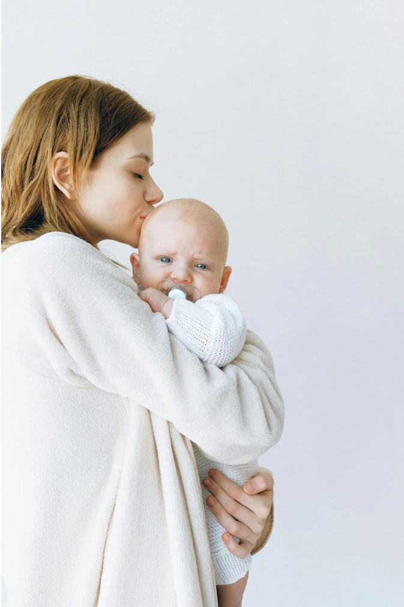
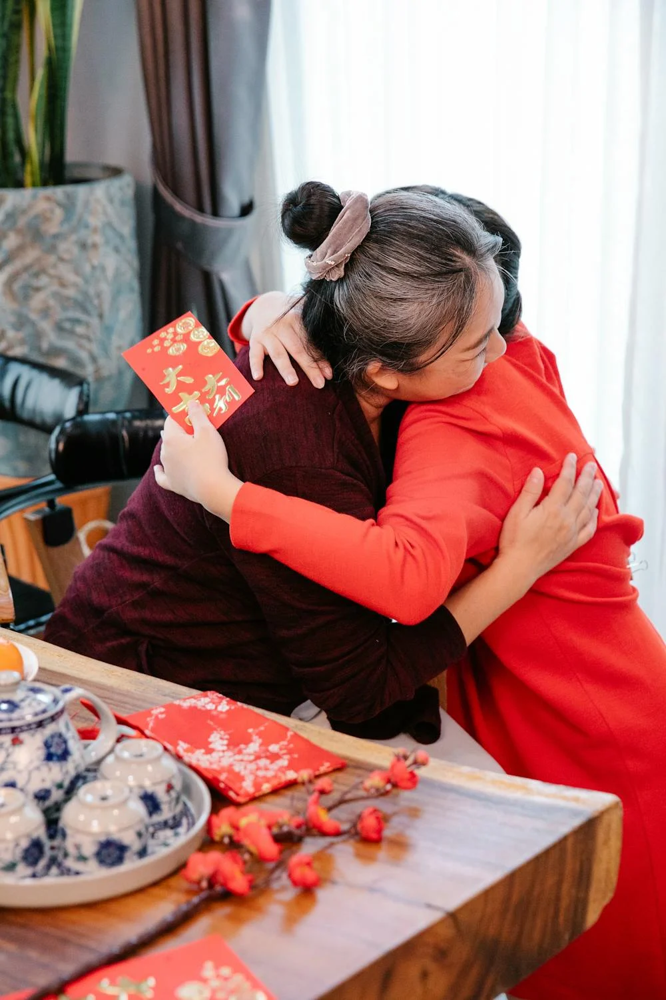
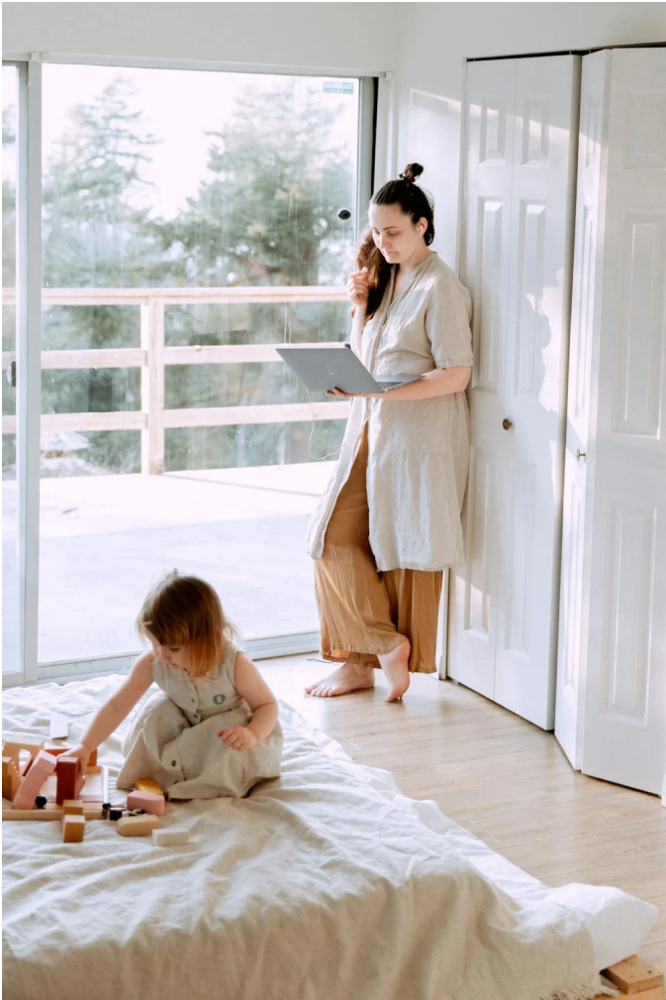
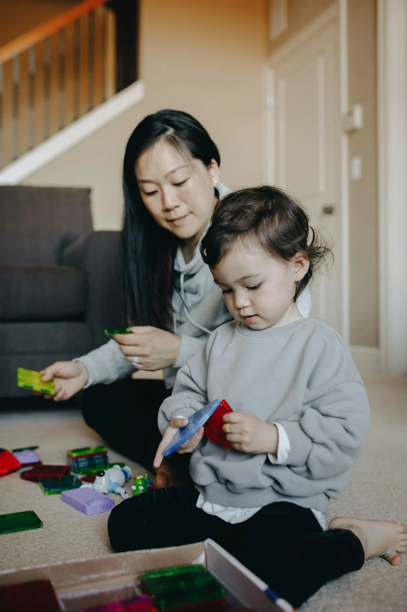

Attentionnées
001


Généreuses
003

Travailleuses
004

À l'écoute
005
Les mamans assurent plusieurs rôles dans la vie de l'enfant.
Elles sont celles qui :
Un guide, une oreille attentive, une main tendue et un regard apaisant pour ses enfants, ainsi que son mari.
La maman est l’équilibre de chaque foyer.
C’est elle qui assure presque toutes les responsabilités liées avec ses enfants et sa maison.